010-0000-0000
000aaa@gmail.com
All work of man is
as the swimmer’s:
a vast ocean
threatens to
devour him;
if he front it not bravely,
it will keep its word.
세상 모든 일은 수영과 같습니다.
바다를 헤치고 나갈 때 파도에 쓸려
바다속으로 빨려 들어갈 위험에 처하지만
헤엄치는 사람이 용감하게 대응하지 않으면,
바다는 여지없이 그를 삼켜버리기 때문입니다.

about에 대한 짤막한 설명
저는 이런 사람입니다. 저는 이런 사람입니다. 저는 이런 사람입니다.
저는 이런 사람입니다. 저는 이런 사람입니다. 저는 이런 사람입니다.저는 이런 사람입니다.
+82 10 7353 2198
oooaaa@gmail.com
00고등학교 졸업
00대학교 00학과 졸업
위의 로고는 수영의 단어를 해체하여, 각각의 요소를 재조합했을 때
수영이라는 단어가 되도록 기획되었습니다.
원을 활용한 디자인으로 둥글고 부드러운 느낌입니다.
로고의 전체적인 디자인은 헤엄과 물결입니다.
포토샵의 기능을 사용해 사진을 편집하는데 능숙합니다.
다양한 도구를 활용한 디자인이 가능합니다.
레이어스타일, 필터, 패턴등의 효과를 이용해 디자인 할 수 있습니다.
포토샵의 기능을 사용해 사진을 편집하는데 능숙합니다.
다양한 도구를 활용한 디자인이 가능합니다.
레이어스타일, 필터, 패턴등의 효과를 이용해 디자인 할 수 있습니다.
포토샵의 기능을 사용해 사진을 편집하는데 능숙합니다.
다양한 도구를 활용한 디자인이 가능합니다.
레이어스타일, 필터, 패턴등의 효과를 이용해 디자인 할 수 있습니다.
포토샵의 기능을 사용해 사진을 편집하는데 능숙합니다.
다양한 도구를 활용한 디자인이 가능합니다.
레이어스타일, 필터, 패턴등의 효과를 이용해 디자인 할 수 있습니다.
상냥하고 좋은 사람이란 말을 많이 들어요.
실제로 관계에 있어서 가장 중요하게 여기는 부분이에요.
하지만 휘둘리지만은 않아요. 확고한 저만의 철칙으로
모든 일을 이끌어 나간답니다.
저는 내향적인 일에서 에너지를 얻어요
명상, 책 읽기, 필사, 작문 다 제가 좋아하는 일이에요.
창의적이고 유연한 생각은 저의 정체성이에요.
만약 이렇다면? 이렇게 해볼까?
친절하고 다정다감. 단호하지만 부드러움
또 항상 좋은 사람이 되려고 노력하고 있어요.
환경 적응이 빠르고 융통성 있어요.
목적지를 향해서 산도 타고 뛰기도 하고 수영도 해요.
그래서 저는 이런 사람이고 이렇게 할거고 일할 때 이렇게 할
거고 진짜 어쩌구 저쩌구 그래서 저는 이런 사람이고 이렇게 할거고 일할 때 이렇게 할 거고 진짜 어쩌구 저쩌구 그래서
저는 이런 사람이고 이렇게 할거고 일할 때 이렇게 할 거고 진짜 어쩌구 저쩌구
웹 리뉴얼
기존의 웹사이트를 개편했습니다.